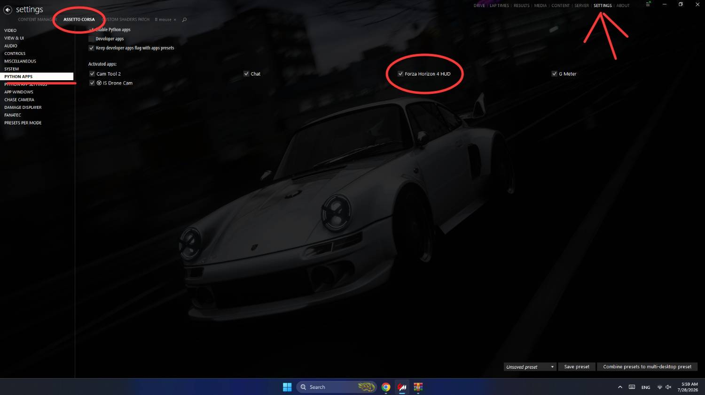

7 · HUD
نصب HUD
اپ HUD را از طریق Content Manager نصب و در بازی فعال کنید.
-
1
نصب در Content Manager
فایل HUD را داخل Content Manager بندازید (دراگانددراپ).
-
2
فعالسازی Python App
مسیر زیر را باز کنید:
SETTINGS → Assetto Corsa → Python Apps
تیک Forza Horizon 4 HUD را فعال کنید.

فعالسازی Forza Horizon 4 HUD SETTINGS → ASSETTO CORSA → PYTHON APPS — تیک Forza Horizon 4 HUD -
3
فعالسازی داخل بازی
داخل بازی از نوار سمت راست HUD را پیدا و فعال کنید.